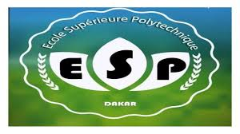

Nos partenaires
UMMISCO
Institutionnel
Unité Mixte Internationale de Modélisation Mathématique et Informatique des Systèmes Complexes — IRD/UCAD.

ESP — École Supérieure Polytechnique
Académique
École d'ingénieurs de l'Université Cheikh Anta Diop de Dakar. Structure d'accueil principale de l'UMMISCO au Sénégal.
UCAD — Université Cheikh Anta Diop
Académique
Première université du Sénégal, fondée en 1957 à Dakar. Tutelle principale de l'UMMISCO au niveau national.

IRD — Institut de Recherche pour le Développement
Institutionnel
Organisme français de recherche pour le développement. Co-tutelle internationale de l'UMMISCO avec l'UCAD.

UGB — Université Gaston Berger
Académique
Université publique sénégalaise de Saint-Louis, partenaire de recherche de l'UMMISCO sur plusieurs projets scientifiques.